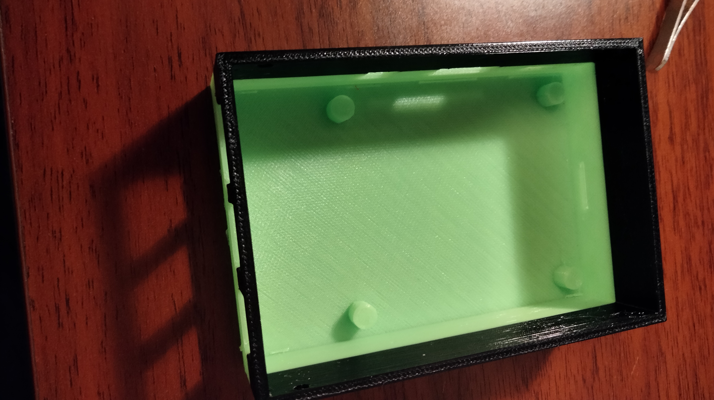

3D printing a Raspberry Pi case with camera holder
Designing in Fusion 360
Designing the case was achieved with Fusion 360. I have already spoken a bit about Fusion 360 in another assignment were I designed a Raspberry Pi case, which was my initial plan to print. However, after having played around with the Raspberry Pi camera, it fast became apparent that I was going to use this for my final Digifab project. I decided to throw in an additional twist to the case, which was the camera holder.
To help me design the case I use a virtual 3D model of the Raspberry Pi model B and the camera. These object were placed in fusion 360 and I simply just build my the case around it. These objects were downloaded from the GrabCad Community website. I ended up with 2 .stl files for the cover and the base.

Exporting G-code
Before printing the case, I first needed to compile the .stl files to G-code which the printer uses to print. For compiling the the .stl I used the PrucaSlicer software, I'm therefore also using a Pruca printer for printing. To specific I'm using the Pruca I3 MK3 3D-printer. I could also have used Pruca mini, however, then I would have to print the two components separately because the Pruca mini has a smaller area to print on. I exported G-code with print settings: Print settings: 0.15mm QUALITY, Filament: PETG, innfill: 15%, Supports: Everywhere, Infill: 15%.
Printing on the Pruca 3D-printer
Having exported the G-code to a mini sd and put it in the pruca printer, I took of the beding and cleaned it. Cleaning is important to ensure that the filament sticks to the beding, otherwise the print might fail. Having cleaned the beding I placed in it the printer again. Next up was preheating, this was set to preheat for PETG. When preheating was done I selected the G-code for my print and started printing. I watched the first couple of layers just to make sure the print well. Most often when a print fails it will be in first couple of layers. When I saw the first layers went well I left the lab. Later I came back to retrieve the finished product. Again I cleaned the beding.
Result
As can be seen on the image the case is printed with different colors, this happend because under the print the printer used up all the fillament. Luckily for me teaching assistant Katrine was on the lab, so she switched the filament for me, resulting in the cool "Ben 10" look. Katrine was also supervising me in the lab as I printed for the first time.
The print was relatively succecfull. The camera fits ok inside of the camera holder, however the window could have been a tiny bit bigger. It's also kind of hard to make the camera stick inside of the camera holder. The bottom case fits very well with Raspberry Pi. I can fit powercable good, I fear though that the USB windows might have been placed a bit to high, so the bottom USB entries are pretty hard to access. All in all the print was ok for a first print.

Support was removed before the image was taken.